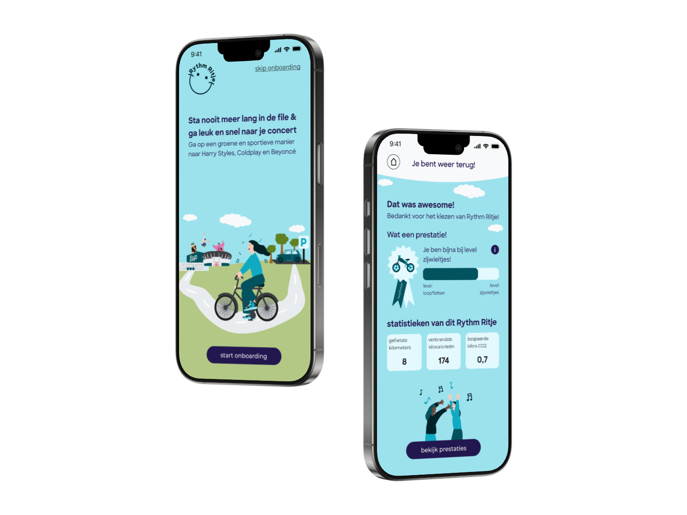
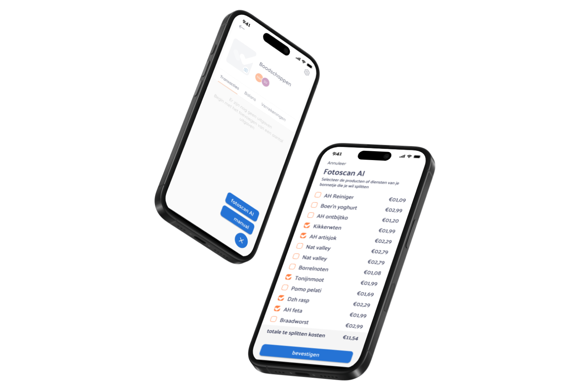

Hi I’m Noa, UX designer with research skills.
I help you make user friendly digital services for everyone.
e-mail meMy work
Rythm Ritje
graduation project
A11y
delve into accessibility

redesign WieBetaaltWat
for receipt collecters to arrange and split costs
About me
I value products that revolve all around the users needs, improve the world and make life easier. That’s what design is for.
In 2019 I began my studies in Communication and Multimedia Design at the Amsterdam University of Applied Sciences. I discovered that I enjoy working on User Experience Design and Research the most. What I particularly like about this field is speaking with users and stakeholders and collaborating to create designs. Providing a sympathetic ear for users and stakeholders and take real action to drive change is what I like doing best.
In the second year of my studies, I served on the board of the student association, IAM Core. As the Treasurer, I managed the finances, created budgets, made Instagram posts and supervised two committees. It was an educational experience during which I learned how to organize and facilitate events and gathered project management skills.
References
To give you a more complete picture of me as a colleague, I gathered some references from former colleagues.
UX researcher at DPG Media
Noa moves very naturally within the company and reaches out to colleagues who can help her achieve her goals. Noa tailors her approach to collaboration to the specific colleague(s), allowing her to naturally get the most out of the partnership. It's impressive to see how she manages to get everyone moving.
UX Designer at DPG Media
Noa is not only pleasant to collaborate with but also possesses a discerning eye, sharp intellect, and analytical acumen, making the working experience truly enjoyable.
Head of Product at DPG Media
It was wonderful having Noa on the team. I learned a lot from her. She will undoubtedly do great things. I wish her all the happiness and beautiful adventures ahead.
Product owner at DPG Media
It was great to have Noa join us at DPG Media! It was hard to tell she was an intern, because you became "one of us" right away. Thanks for everything! Perhaps we'll cross paths again in the future.
Contact
Let’s get in touch
I am always up for a challenging project. If you are interested in working with me or have a question, feel free to send an e-mail.